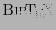

Next: Concrete example Up: Review of the Microsoft Previous: Ranking algorithm
The user can easily navigate between different keywords, papers and journals to acquire useful information. A lot of valuable information about (co)authors such as the social network of the researchers is represented in a visually attractive way.
Search results are presented instantaneously. In general they seem to be relevant and have a good ordering according to importance.
However, the texts accompanying the search results are very limited (sometimes even completely missing) and do not provide useful information until after a particular result is clicked on. The information then shown is very complete; it may even be overwhelming for the user to find the required information on that page. The button to export citations to  is very useful and easy to use.
The advanced search is rather difficult to use in comparison with its flexibility. A separate page with more options might be easier to use and could be more easily personalized/extended.
In addition, the color scheme to differentiate between papers, authors and journals is somewhat unlucky and can make it difficult for the user to have a good overview of the search results (especially when there is little text and space separating them).